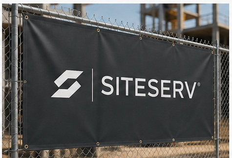

Requests and records in different places.
Quotes, service agreements, emails, delivery details, documents and invoices can sit in separate files and provider systems.
SITESERV brings temporary site infrastructure, service providers, procurement activity and ongoing operations into one organized project workflow.
From the first requirement to delivery, service changes and closeout, keep the details connected to the project they support.
Temporary services arrive from different providers, follow different agreements and operate on different timelines. SITESERV gives those requirements a shared project context—so the team can see what is needed, who is responsible and what happens next.
Quotes, service agreements, emails, delivery details, documents and invoices can sit in separate files and provider systems.
Project teams work across suppliers, internal approvers, site contacts and procurement responsibilities.
Service quantities, locations, delivery windows, maintenance needs and removal dates change as a project develops.
SITESERV is designed around the complete service lifecycle, not just supplier discovery or a static list of site equipment.
Record the service, location, quantity, specifications, timing and internal owner.
Maintain provider records, request quotations, compare terms and track responses.
Record approvals and orders, then coordinate delivery and installation details.
Track active services, changes, maintenance, issues, costs, documents and removal.
Temporary power and generation, water, connectivity, sanitation, waste, fencing, site security, lighting, temporary facilities and selected equipment all have different requirements. SITESERV organizes them around the project, site and provider relationship.
Explore services and infrastructure →
SITESERV manages the customer’s temporary site-service requirements across existing provider relationships. The value does not depend on becoming the supplier of every service or requiring every provider to adopt a full SITESERV account.
Explore platform capabilities →From the field to procurement and accounts payable, SITESERV connects the records and decisions involved in managing temporary site services.